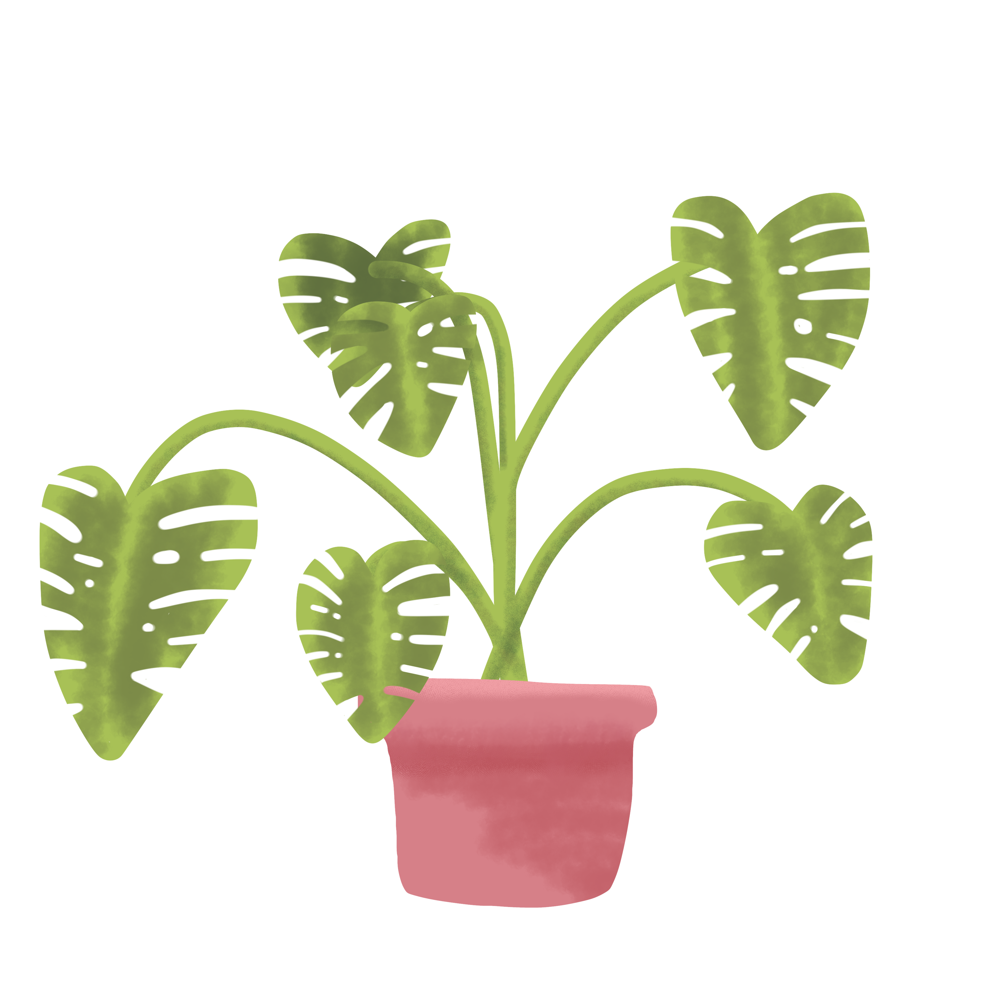

Essential Tips For Keeping Your Houseplants Healthy
Plant Names
Soil
Light
Watering
Temperature
Other Tips
Monstera 
Mix with a slightly acidic pH
Indirect Sunlight
Once a Week
Between 60-80 °
Avoid re-potting too often and prune regularly by pinching off new growth.
Sanseviera
A granular, soil-free
Low light
Once every 10 days
Between 55-85 °
Water until liquid flows through the drainage hole at the bottom of the pot and discard any water that has accumulated in the saucer.